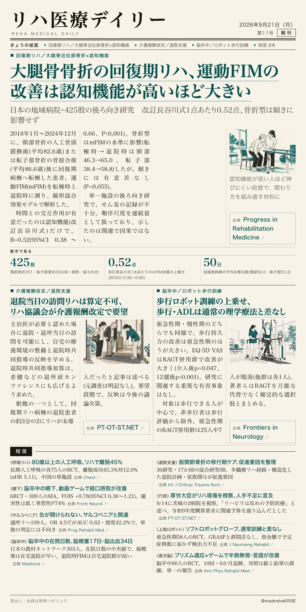
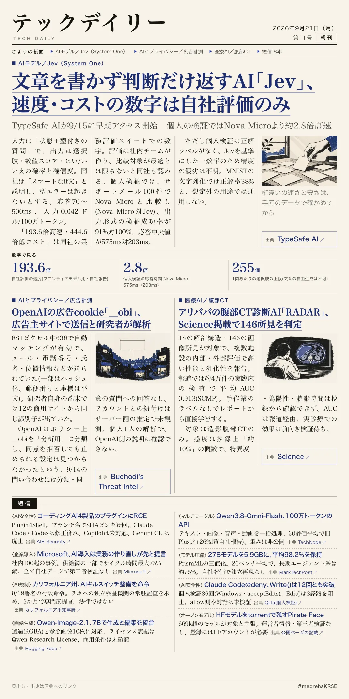

リハ医療デイリー
大腿骨骨折の回復期リハ、運動FIMの改善は認知機能が高いほど大きい
日本の地域病院・425股の後ろ向き研究 改訂長谷川式1点あたり0.52点、骨折型は傾きに影響せず
日本の1つの地域病院で回復期病棟へ転棟した大腿骨頸部骨折(201股)・転子部骨折(224股)の患者を後ろ向きに解析。運動FIMの改善幅と有意に交互作用したのは認知機能だけで、改訂長谷川式が1点高いごとに0.52点大きかった。

テックデイリー
文章を書かず判断だけ返すAI「Jev」、速度・コストの数字は自社評価のみ
TypeSafe AIが9/15に早期アクセス開始 個人の検証ではNova Microより約2.8倍高速
元OpenAI研究者が創業した米TypeSafe AIが、選択肢から選ぶ・スコアを返す・はい/いいえの確率を返す、の3形式だけを出力するモデルを発表。フロンティアモデル比で「193.6倍高速」と主張するが、独立検証は確認できない。
